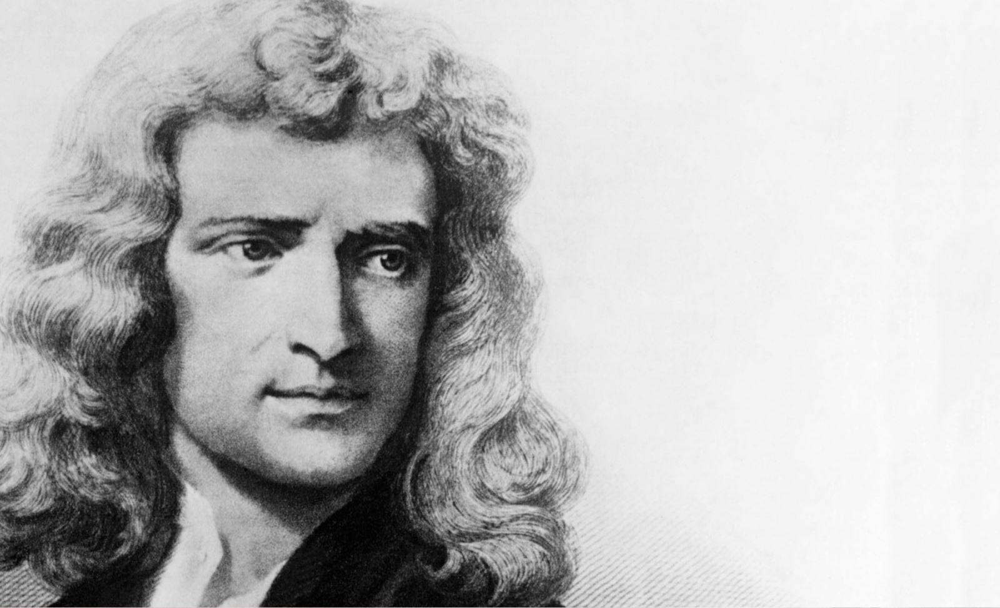

NEWTON
Vào một ngày mùa hè năm 1666, Isaac Newton(1) tự hỏi:
- Tại sao các hành tinh chuyển động quanh Mặt trời?
Newton đang ngồi trong vườn, phía sau là ngôi nhà xây bằng đá xám mà ở đó ông đã lớn lên. Các bức vách của nó vẫn còn mang các đồng hồ mặt trời mà ông đã làm từ thuở bé thơ. Trong nhà, mẹ ông đang chuẩn bị bữa ăn chiều. Ba người em của ông: Benjamin, Mary và Hannah còn ở ngoài đồng giúp thu hoạch vụ mùa. Từ lâu, mẹ ông đã từ bỏ ý định muốn ông trở thành một nông dân.
Trước đó một năm, Newton đã theo học tại Đại học Cambridge, thì xảy ra một đợt dịch hạch khủng khiếp tấn công vào các thị trấn trên khắp nước Anh. Trường Đại học đã cho các sinh viên về nhà để tránh dịch. Giờ đây, Newton đang dành thời gian của mình vào việc suy nghĩ và làm thí nghiệm.

Isaac Newton
Ông không tự hỏi tại sao các hành tinh chuyển động, bởi vì ông nhận ra rằng chúng sẽ tiếp tục chuyển động ngoài quán tính. Trong không gian không có ma sát để làm chúng chậm lại, nhưng tại sao chúng chuyển động theo đường tròn chứ không theo đường thẳng? Ông lập luận:
- Hẳn là phải có một lực nào đó kéo chúng lại thành các quỹ đạo khép kín.
Nhớ lại lúc còn bé, ông đã dùng sợi dây buộc hòn đá và quay xung quanh trên đầu như thế nào trước khi buông tay thả cho hòn đá bay đi. Sợi dây là nhằm ngăn ngừa hòn đá bị văng ra. Lúc này, ý nghĩ chợt đến với ông là lực tác động lên các hành tinh cũng có tác dụng như sợi dây buộc hòn đá vậy. Như thể có một sợi dây từ Mặt trời đang kéo các hành tinh, nhưng trên bầu trời thì không có sợi dây nào cả.
Lực kéo bí ẩn này là vô hình, nhưng nó phải khỏe hơn gấp nhiều lần sợi dây chắc nhất.
Trong lúc Newton ngồi suy ngẫm thì gió giật từng cơn, lay động cành lá trên một cây táo to mọc gần đó. Các nhánh trĩu nặng quả chín, bất chợt một quả táo rơi phịch xuống và lăn đi một quãng.
Tiếng rơi phịch làm Newton giật mình và nhìn quanh quất. Trông thấy quả táo, ông biết rằng gió đã thổi nó lăn đi xa như thế nào. Tư duy toán học của ông lập tức thắc mắc tại sao quả táo rơi xuống chỉ ngần ấy. Tại sao nó không rơi xa hơn hoặc gần hơn?
Gió đã ném quả táo về phía trước, đồng thời sức hút của Trái đất đã kéo nó hướng xuống.Cũng như quả đạn thần công của Galileo, quả táo đã chuyển động theo đường parabol. Khoảng cách mà nó di chuyển được ấn định bởi sức gió.
Newton tiếp tục theo đuổi dòng suy nghĩ. Giả sử gió mạnh gấp nhiều lần, thì quả táo sẽ di chuyển xa ngần nào? Liệu nó có bị thổi đi xa đến Biển Bắc chăng?
Đến lúc này, Newton không nghĩ về gió thực nữa, mà là gió tưởng tượng. Ông có thể tạo ra một luồng gió tưởng tượng mạnh đến mức như ông muốn. Ông nghĩ:
- Với sức gió khá yếu thì quả táo sẽ rơi xuống, lấy ví dụ, cách xa một dặm. Nhưng nếu bị thổi càng nhanh thì nó sẽ rơi càng xa: hai, năm, mười, một trăm hoặc thậm chí cách xa một ngàn dặm.
Khi khoảng cách tăng lên, thì đường parabol chuyển động của quả táo càng rộng ra. Newton tự hỏi mình một câu hỏi nghe thật vô lý:
- Nếu đường parabol trở lên lớn đến mức nó rộng hơn cả đường cong của bề mặt Trái đất thì sao?
Thế là ông quyết định:
- Quả táo sẽ chuyển động theo một đường cong vòng quanh Trái đất và trở về nơi mà nó xuất phát. Với một đường cong đủ rộng, quả táo sẽ hoàn toàn không bao giờ đi xuống! Nó sẽ tiếp tục đi vòng quanh Trái đất.
Newton không biết rằng 300 năm sau, con người sẽ phóng vệ tinh nhân tạo vào quỹ đạo quay quanh Trái đất. Nhưng ông nhận ra rằng quả táo tưởng tượng của mình, hoặc bất kỳ vật phóng nào khác, nếu chuyển động đủ nhanh thì nó sẽ tiếp tục di chuyển xung quanh Trái đất. Sức hút của trái đất sẽ luôn luôn kéo nó lại và nó sẽ luôn luôn “rơi”, nhưng sẽ không bao giờ chạm mặt đất. Ngày nay, chúng ta biết rằng một vật phóng như vậy phải di chuyển với vận tốc tối thiểu là 28.967km/giờ. Miễn là nó nằm bên ngoài khí quyển (là nguyên nhân gây ra ma sát), thì một vệ tinh di chuyển với vận tốc này sẽ giữ nó quay bất tận xung quanh Trái đất.
Newton vô cùng phấn khích với ý tưởng của mình, ông tiếp tục đào sâu suy nghĩ. Nếu sức hút của Trái đất giữ một vật phóng trên quỹ đạo, thì nó cũng sẽ giữ được Mặt trăng trên quỹ đạo. Có thể sức hút của Trái đất vẫn có tác động thậm chí xa đến 384.000km – khoảng cách từ Trái đất đến Mặt trăng.
Phải chăng sức hút, tác động xa trong không gian, là sợi dây vô hình mà ông đã nghĩ trước đây? Nếu Trái đất kéo Mặt trăng thì tại sao Mặt trời lại không kéo các hành tinh theo cách đó? Có thể các lực kéo này là cùng một kiểu.
- Vạn vật hấp dẫn.
Ông thì thầm, tưởng tượng lực hấp dẫn tinh tế và kỳ lạ này đang tác động khắp không gian, sao cho từng hành tinh phải chịu ảnh hưởng của nó. Đấy là một cách nhìn phi thường. Giá mà ông có thể chứng minh nó đúng.
Ngày này sang ngày khác, Newton vật lộn với vấn đề hóc búa này. Ông đã ngăn ra một phần phòng ngủ để làm một phòng làm việc nhỏ, trang trí trên vách với hình vẽ con gà lôi và ngôi nhà thờ gần đó. Giờ đây, ông ngồi trong phòng tra cứu các sách để tìm manh mối. Ông nhận xét:
- Kepler phát hiện rằng quỹ đạo của một hành tinh càng nằm xa Mặt trời, thì hành tinh ấy càng chuyển động chậm.
Ông xem xét phương pháp tính toán mà Kepler đã nghĩ ra để phát biểu điều đó. Bản thân sự phát biểu này không giải thích gì cả, song Newton cố nghiền ngẫm xem ý nghĩa thực sự của nó là gì. Rốt cuộc, ông thấy rằng nó chỉ dừng lại với ý tưởng về lực kéo từ Mặt trời tỏa rộng theo mọi hướng, dần dần yếu đi, cũng như ánh sáng.
Như vậy có nghĩa là lực kéo này tuân theo định luật bình phương nghịch đảo, đã chứng minh như một phép đo cho các lực ly tâm, chúng trở lên yếu dần theo tỷ lệ đối với bình phương của khoảng cách. Ở xa hai dặm sẽ yếu hơn bốn lần so với ở xa một dặm, trong khi ở xa ba dặm sẽ yếu hơn chín lần, vân vân.
Newton quyết định, nếu sức hút của Mặt trời tuân theo định luật bình phương nghịch đảo, thì có lẽ sức hút của Trái đất cũng tuân theo định luật này. Song tác động theo cách này, liệu sức hút của Trái đất có đủ mạnh để giữ Mặt trăng trên quỹ đạo hay không? Newton tính toán rằng lực kéo cần có để giữ Mặt trăng trên quỹ đạo phải làm cho Mặt trăng “rơi” hướng về Trái đất với vận tốc 0,1369cm/giây. Sau đó, ông phải kiểm tra xem liệu sức hút của Trái đất có tạo ra “sự rơi” cần thiết để kéo Mặt trăng hay không.
Để giải quyết bài toán này, ông cho rằng sức hút của Trái đất tác động như thể lực kéo của nó xuất phát từ trung tâm Trái đất, Mặt trăng ở xa trung tâm này 60 lần so với bề mặt Trái đất. Bằng định luật bình phương nghịch đảo, lực kéo của Trái đất sẽ là 60x60=3.600 lần yếu hơn so với Mặt trăng.
Theo ông, lực kéo ở bề mặt Trái đất có vận tốc là 480cm/giây. Chia số này cho 3.600, ông thấy rằng lực kéo ở Mặt trăng có vận tốc là 0,13cm/giây.
Tất nhiên, những gì Newton đã làm chỉ là phép tính thô thiển. Ông làm cho nó đơn giản hơn bằng cách giả định quỹ đạo Mặt trăng là đường tròn, chứ không phải là đường elip. Ông còn chứng minh rằng ông có thể coi lực kéo của Trái đất tác động như thể nó bắt nguồn từ trung tâm Trái đất.
Tuy nhiên, giờ đây Newton cảm thấy chắc chắn rằng sức hút sẽ giải thích các chuyển động của toàn bộ hệ Mặt trời. Đa số các nhà khoa học đều muốn nói với mọi người về phát hiện lớn này song Newton thì không nói gì cả. Ông là một người nhút nhát, sống thu mình, bằng lòng giữ riêng ý tưởng của mình. Ngoài ra, có thể ông cảm thấy rằng không nên thông báo công trình của mình, cho tới khi ông đã chứng minh nó bằng chi tiết toán học chính xác.
Đến lúc này, Newton chuyển sự chú ý của ông sang một khía cạnh khác. Nhiều năm trước đó, khi còn ở Cambridge, ông đã tìm cách chế tạo một kính viễn vọng tốt hơn bất kỳ kính nào của thời ấy. Các kính viễn vọng của Galileo, các kính của những người khác làm ra sau đó, tất cả đều có một khiếm khuyết quan trọng. Các thấu kính của chúng làm cho ảnh vật xuất hiện gần hơn, nhưng đồng thời cũng làm cho ảnh vật bị viền với các màu. Người ta không thể nhìn rõ và sắc nét các sao hoặc các hành tinh theo các màu thực của nó. Newton muốn tìm hiểu tại sao các màu viền này lại xuất hiện. Theo ông, nếu tìm ra nguyên nhân, ông có thể nghĩ ra một cách chế tạo các thấu kính tốt hơn, chúng sẽ không cho ra các màu không mong muốn.
Ông đã thử mài các thấu kính theo các hình dạng khác nhau, với hy vọng một sự thay đổi về hình dạng sẽ mang lại các kết quả khả quan hơn. Đó là một công việc tỉ mỷ và vất vả, nhưng ông vẫn theo đuổi cho tới khi ông đã thử từng hình dạng một mà ông có thể nghĩ ra. Thế nhưng, không có cái nào trong số chúng tạo ra bất kỳ cải thiện nào. Ông quyết định:
- Nếu hình dạng của thấu kính không có tác dụng gì, thì thủy tinh của thấu kính phải là nguyên nhân gây ra các đường viền.
Ông đã biết rằng cũng chính loại hiệu ứng màu ấy xuất hiện khi ánh sáng đi qua một lăng kính tam giác, lăng kính phản chiếu tất cả các màu của cầu vồng. Lúc bấy giờ, các lăng kính được bán như đồ chơi, vì người ta thích nhìn các màu, Newton có lần đã mua một cái ở hội chợ. Ông thận trọng tiến hành một loạt các thí nghiệm với lăng kính để xem liệu mình có thể tìm hiểu tại sao các màu xuất hiện.
Vào thời ấy, nhiều người nghĩ rằng ánh sáng trắng (ánh sáng Mặt trời) là ánh sáng cơ bản và thuần khiết, còn ánh sáng màu là sự biến dạng của ánh sáng trắng. Họ cho rằng nếu ánh sáng Mặt trời chiếu qua một tấm kính màu đỏ trên cửa sổ nhà thờ, thì ánh sáng bị nhuộm đỏ, có phần nào giống như vải trắng có thể được nhuộm màu. Song thủy tinh trong lăng kính hoặc thấu kính thì không có màu. Tại sao các màu lại xuất hiện ở đấy?
Để hứng một tia ánh sáng Mặt trời, Newton làm tối phòng làm việc của ông bằng cách che màn đen lên cửa sổ rồi khoét một lỗ nhỏ trên màn, ông thu được một tia ánh sáng mảnh chiếu vào phòng tối. Ông đặt một tấm màn trắng trên đường đi của tia sáng, thế là một chấm sáng tròn nhỏ xuất hiện trên màn. Bước kế tiếp là tìm xem điều gì xảy ra khi đặt một lăng kính vào tia sáng này
Ông dùng một lăng kính lớn giữ trên giá đỡ kim loại, thận trọng đưa nó vào đường đi của ánh sáng. Tia sáng khúc xạ khi nó đi qua lăng kính và tỏa ra thành các màu. Sử dụng lăng kính, Newton có thể tập trung các màu này trên màn một cách rõ nét. Ông ngạc nhiên khi thấy chúng nổi bật lên thành các dải đẹp rực rỡ: đỏ,cam, vàng, lục, lam, chàm và tím. Ông thốt lên:
- Đây là tất cả các màu của cầu vồng!
Ông xê dịch lăng kính kiểu này kiểu nọ và thấy rằng các màu luôn xuất hiện theo cùng một trật tự. Mỗi màu được lăng kính làm cho khúc xạ theo một góc riêng biệt. màu tím khúc xạ nhiều nhất, kế đến là màu lam, lần lượt cho đến màu đỏ, là màu khúc xạ ít nhất. Ông nhận xét:
- Mỗi màu khúc xạ một cách khác nhau, do đó ánh sáng bị phân tán bởi lăng kính.
Đến đây, ông hiểu được tại sao các thấu kính của kính viễn vọng tạo ra các màu viền của ảnh vật. Để hoạt động chính xác, một thấu kính phải khúc xạ ánh sáng thành một tiêu điểm sắc nét. Nếu thủy tinh của thấu kính khúc xạ các màu khác nhau với các lương khác nhau, thì chúng sẽ không đến cùng một tiêu điểm. Kết quả cho ra sẽ là một ảnh nhòe viền màu.
Nhưng ánh sáng màu là gì? Phải chăng mỗi màu thật ra là ánh sáng trắng bị “nhuộm” theo một cách nào đó? Newton nghĩ:
- Nếu nó bị nhuộm màu, thì một lăng kính khác sẽ thay đổi nó nhiều hơn nữa.
Để thu một màu duy nhất, ông chọc một lỗ nhỏ trên màn, nơi dải đỏ hiện trên đó. Giờ đây, một số ánh sáng đỏ di chuyển xuyên qua lỗ. Ông lấy lăng kính thứ hai và đặt nó vào đường đi của tia sáng đỏ này.
Ánh sáng đỏ đi qua lăng kính,khúc xạ theo cùng một góc như nó đã khúc xạ trong lăng kính thứ nhất, nhưng nó không phân tán và không có các màu khác xuất hiện. Ông nhận xét:
- Nếu ánh sáng đỏ không bị lăng kính làm thay đổi, có thể màu đỏ là một màu cơ bản của ánh sáng, cơ bản hơn ánh sáng trắng.
Còn các màu khác thì sao? Ông lần lượt thử từng màu và thấy rằng chúng vẫn giữ nguyên. Không nghi ngờ gì nữa; các tia màu trong các dải bị lăng kính chia tách là các màu cơ bản của ánh sáng. Ông quyết định:
- Dù thế nào đi nữa, ánh sáng trắng phải là sự tổng hợp của tất cả các màu này!
Thật là một nghịch lý đáng kinh ngạc để nghĩ rằng màu trắng được tạo bởi sự kết hợp các màu. Nhưng Newton chứng minh nó hoàn toàn đơn giản bằng cách cho toàn bộ dải các màu đến từ một lăng kính đi qua một lăng kính khác được đặt đảo ngược với lăng kính thứ nhất. Các màu tiến sát lại với nhau, hợp nhất và xuất hiện thành một tia sáng trắng thuần khiết!
 .
.
Newton quyết định gọi dải các màu tạo thành ánh sáng trắng là quang phổ. Thường thì chúng ta vẫn nói có sáu màu trong quang phổ, song Newton là người có khả năng đặc biệt tốt về phân biệt các màu, ông thấy được màu thứ bảy- màu chàm- giữa màu tím và màu lam.
Khi có được phát hiện cơ bản này, Newton quyết định rằng viền màu xuất hiện trong các thấu kính sẽ không bao giờ khắc phục được, do ánh sáng trắng luôn luôn tách thành các màu khi hội tụ. Ngày nay, chúng ta biết rằng nhận định này của ông là sai, bởi vì các loại thủy tinh khác nhau sẽ khúc xạ ánh sáng với các lượng khác nhau; một sự kết hợp thận trọng của các loại thủy tinh sẽ cho ra thấu kính hiệu chỉnh màu. Tuy nhiên, do Newton chưa nắm được điều này nên ông mới có nhận định như vậy.
Các màu khác nhau khúc xạ qua thủy tinh theo các góc khác nhau, nhưng tất cả chúng đều phản xạ theo cùng một góc. Do đó, ông kiên quyết chế tạo một kính viễn vọng được phóng đại bằng gương thay vì bằng thấu kính. James Gregory là người đã đưa ra ý tưởng dùng gương cong để phóng đại trong kính viễn vọng. Giờ đây, Newton quyết định rằng ý tưởng của Gregory là cách duy nhất để tránh được các viền màu trong thấu kính. Ông tự hứa là sẽ thử nó càng sớm càng tốt khi ông trở về Cambridge.
Cuối tháng ba năm sau, Newton trở về Cambridge. Sau khi mua các trang bị cần thiết, ông bắt tay vào chế tạo kính viễn vọng.
Để có được gương, ông phải dùng kim loại đánh bóng, bởi lẽ vào thời ấy người ta chưa phát hiện cách làm gương soi bằng phương pháp mạ bạc lên thủy tinh. Kim loại là một hợp kim mà ông đặc biệt nghĩ ra cho mục đích này, gồm có đồng và thiếc cùng một ít arsen. Ông mua một nồi và nấu chảy các kim loại, đặt cách chỗ làm việc càng xa càng tốt vì nó tỏa khói độc. Sau đó, ông đổ khuôn và đánh bóng tấm kim loại cho tới khi nó trở thành một gương lõm hoàn chỉnh.

Cách hoạt động của kính viễn vọng Newton: Ánh sáng được gương lõm nằm ở đáy ống thu lấy và phản xạ lên gương phẳng nằm gần miệng ống. Kế đến, ánh sáng được phản xạ một lần nữa và hội tụ (nơi các tia ánh sáng giao nhau). Cuối cùng, ánh sáng được thị kính phóng đại. các thị kính khác nhau cho ra các độ phóng đại khác nhau.
Ông cũng tự làm ống kính, có chiều dài 15cm và đường kính 2,5cm. Kính viễn vọng được lắp trên một ổ khớp cầu để nó có thể dễ dàng xoay theo mọi hướng. Gương lõm nằm ở đáy ống và phản chiếu ánh sáng ngược lên một gương phẳng nằm gần miệng ống, gương này đánh lệch ánh sáng qua thị kính nằm bên hông của ống và được thị kính phóng đại. Bằng cách này, Newton vẫn phải có một thấu kính trong kính viễn vọng của ông, nhưng thấu kính này quá nhỏ và không gặp trở ngại về viền màu nhiều như thấu kính lớn.
Ông thử kính viễn vọng và hết sức vui mừng thấy nó hoạt đông suôn sẻ. Tuy hầu như không lớn hơn một món đồ chơi, nhưng ông có thể nhìn qua nó và thấy rõ cá vệ tinh của Mộc tinh.
Newton hãnh diện viết:
- Kính viễn vọng nhỏ của tôi hoạt động tốt hơn một kính viễn vọng bình thường dài 1,2m với hai thấu kính.
Ông tính toán rằng nó phóng đại 35 lần.
Sau đó, ông chế tạo một kính viễn vọng phản xạ lớn hơn và tặng cho Hội Hoàng gia London. Tuy nhiên, Newton chưa bao giwof thực hiện các quan sát về bầu trời một cách có hệ thống.
Khi kính viễn vọng dùng gương của ông được biết đến, những người khác hăm hở dựa vào đó và phát triển ý tưởng của ông. Vào thời điểm mà các thấu kính hiệu chỉnh màu đã được nghĩ ra, các ưu điểm khác đối với gương cũng được biết đến, do đó ngày nay các kính viễn vọng lớn nhất thế giới đều là kính viễn vọng phản xạ.
Nhưng còn phát hiện lớn nhất của Newton, các tác động của sức hút thì sao? Sauk hi tính toán chi tiết, ông xây dựng các khái niệm và đưa ra lý thuyết vạn vật hấp dẫn. Được nhà thiên văn người Anh tên là Edmond Halley khuyến khích, Newton đủ khả năng để xác định mọi chuyển động được biết của các thiên thể trong hệ Mặt trời. Sử dụng công trình của ông, Halley tiên đoán chính xác rằng một sao chổi được thấy vào năm 1682 sẽ tái xuất hiện vào năm 1758.
Tuy nhiên, Newton không cảm thấy chắc chắn rằng lực hấp dẫn cũng sẽ giải thích được cơ cấu của vũ trụ nằm ngoài hệ Mặt trời. Lần đầu tiên, người thăm dò xa hơn vào vũ trụ là William Herschel, ông dùng kính viễn vọng phản xạ tốt hơn bất cứ kính nào được biết trên thế giới vào thời bấy giờ.
Chú thích:
(1) Isaac Newton (1643 – 1727). Nhà vật lý, nhà toán học và nhà thiên văn người Anh, là một trong những người đặt cơ sở cho khoa học tự nhiên hiện đại. Công trình vĩ đại nhất của Newton là Các nguyên lý toán học của triết học tự nhiên xuất bản năm 1687, trong đó ông xây dựng các khái niệm, các nguyên lý cơ bản của cơ học, điển hình là ba định luật ngày nay mang tên ông. Ông phát hiện định luật vạn vật hấp dẫn, được ứng dụng có hiệu quả vào việc xác định chuyển động của các thiên thể trong hệ Mặt trời. Trong cuốn Quang học xuất bản năm 1704, ông đã chỉ ra rằng với lăng kính thủy tinh có thể phân tích ánh sáng trắng thành các ánh sáng màu khác nhau do có độ khúc xạ khác nhau, từ đó giải thích hiện tượng sắc sai của thấu kính. Từ 1668 – 1671, ông chế tạo kính viễn vọng phản quang có gương cầu lõm